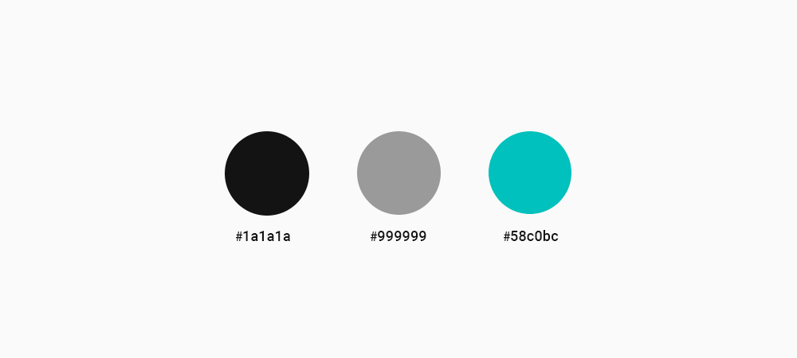

Recursos
Referente 1 floroliva.com.ar
Referente 2 desygner.com 
Misceláneas Ilustraciones
Cromática Colores fríos 
Tipografía 1 Textos
Tipografía 2 títulos
Guía de Trabajo Práctico Final 2016
Realizar un sitio Web de mediana complejidad enfocado en las necesidades de los usuarios a los cuales esté dirigido el mismo.
4De acuerdo al proyecto web iniciado en la cursada, deberá culminar su desarrollo.
Incluir todas las secciones planteadas con funcionamiento de formularios, galerias, slider, menú de navegación, etc con adaptabilidad responsive.
El sitio debe estar desarrollado bajo los nuevos estándares HTML5 / CSS3 / JavaScript. Implementación de textos, menú de navegación en listas, resolución estándar, etc.
Deberá estar online, bajo un dominio genérico (dependiendo del hosting).
También deberá estar optimizado para buscadores (SEO), y apto para acceder desde otros navegadores.
Lista de las páginas de un sitio web accesibles por parte de los buscadores y los usuarios. Los mapas de sitio pueden mejorar el posicionamiento en buscadores de un sitio, asegurándose que todas sus páginas puedan ser encontradas.